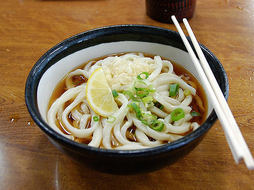
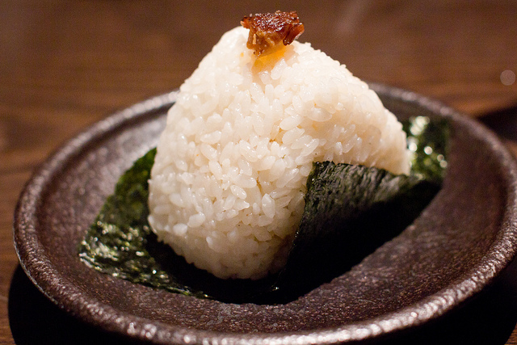

Hola bienvenidos al menu de platillos de Japon.
Platillo |
Imagen |
Informacion |
| 1-Udon. |
 |
El Udon es un plato a base de fideos gruesos de harina que se sirven normalmente en caldo dashi (caldo de pescado), salsa de soja y mirin , al cual se le agregan otros ingredientes como cebolla de verdeo y tofu. Hay muchísimas versiones de este plato, y una es más apetitosa que otra. |
|
2-Onigiri.
|  |
El onigiri es simplemente una bola de arroz rellena con diferentes ingredientes como atún, anguila, salmón o verduras entre otros. Generalmente tienen forma de triangulo u oval, y se las envuelve con alga nori. Es una comida muy sencilla y económica. Si te gusta la comida japonesa, ¡Tienes que probar el onigiri!. |
|
3-Okonomiyaki
|
Mi plato favorito de la gastronomía japonesa. Su preparación es muy sencilla y similar a lo que en mi país llamamos “tortilla”. El okonomiyaki es un plato originario de la región de Kansai, y contiene diferentes ingredientes, entre ellos calamar, carne de cerdo, bacon y camarones. Pero los vegetales juegan un papel importante en este plato, ya que también contiene generosas cantidades cebolla de verdeo, brotes de soja y repollo. Esta comida esta cubierta de una salsa color negra llamada “Salsa okonomiyaki” y en muchos casos también se le pone mayonesa. Obviamente, estas salsas van a elección del consumidor. Si quieres saber más sobre este plato, te recomiendo leer la entrada Okonomiyaki, un delicioso plato japonés. |